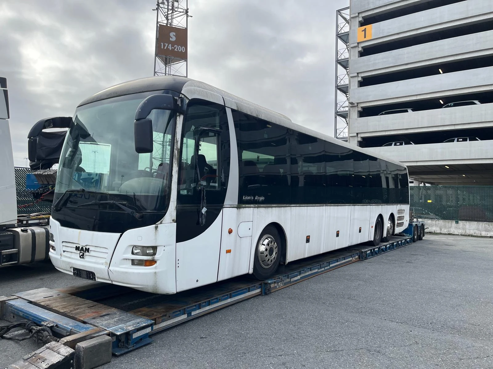

Fahrzeugtransport Köln–Belgien
Pkw und Transporter bis 3,5 Tonnen sowie weitere Fahrzeuge, von Ihrer Adresse oder einer Werkstatt zu einem Ziel in Belgien.
Mehr erfahren →Fahrzeugtransport ab Köln
Ihr Fahrzeug steht in Köln oder im Rheinland und muss nach Belgien, in den Hafen Antwerpen oder zurück? Faster Depannage Takeldienst aus Antwerpen organisiert den Transport – persönlich und mit klarem Preis vorab.

Von Ihrer Adresse in Köln oder von einer Werkstatt im Rheinland bis zum Ziel in Belgien oder zum Verschiffungshafen Antwerpen.
Pkw und Transporter bis 3,5 Tonnen sowie weitere Fahrzeuge, von Ihrer Adresse oder einer Werkstatt zu einem Ziel in Belgien.
Mehr erfahren →Panne oder Unfall in Deutschland? Wir bringen Ihr Fahrzeug zurück nach Belgien oder an einen anderen vereinbarten Ort.
Mehr erfahren →Wir bringen Ihr Fahrzeug zum Hafen Antwerpen, bereit zur Verschiffung – auf Wunsch mit Angeboten von Verschiffungsunternehmen.
Mehr erfahren →Für Busse, Maschinen und Fahrzeuge, die zu hoch, zu lang oder zu schwer sind, arbeiten wir mit einem festen Partner mit Tieflader.
Mehr erfahren →Schreiben oder rufen Sie an: Standort in Köln, Ziel, Marke und Modell und der gewünschte Zeitraum.
Wir besprechen mit Ihnen die beste Lösung und nennen Ihnen vorab einen festen Preis.
Wir holen das Fahrzeug ab und liefern es zum vereinbarten Ziel – ohne Überraschungen.

Aus der Praxis
Ein 50-Sitzer-Bus, zu hoch und zu lang für einen normalen Transport: Gemeinsam mit unserem festen Partner brachten wir ihn per Tieflader sicher in den Hafen Antwerpen, bereit zur Verschiffung nach Ghana.
Schreiben Sie uns per WhatsApp oder rufen Sie an. Wir melden uns mit einem klaren Preis.